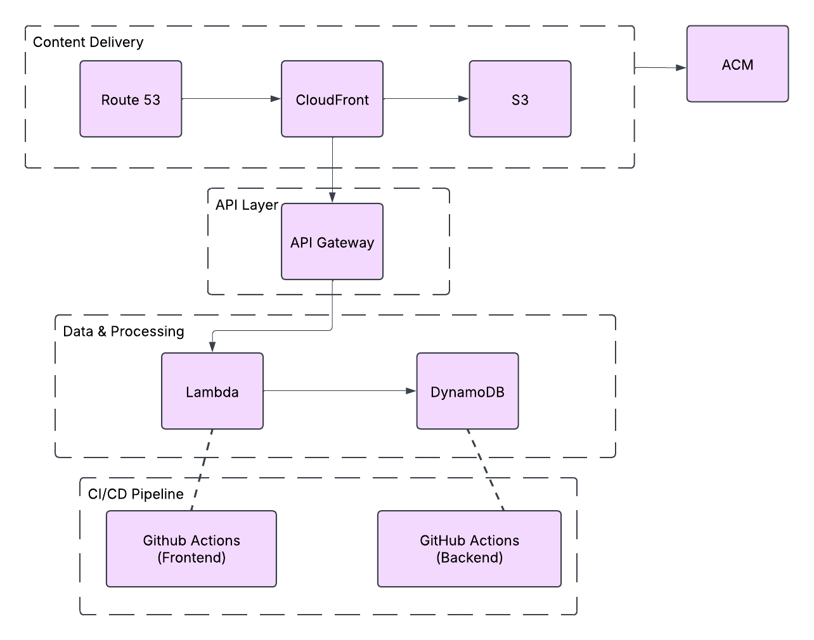

Using Shared Access Signature (SAS) tokens with azcopy is common — but rotating tokens and handling them securely can be a hassle. To improve security and simplify our automation, I recently replaced SAS-based authentication in our scheduled AzCopy jobs with Azure User Assigned Managed Identity (UAMI).
In this post, I’ll walk through how to:
Replace AzCopy SAS tokens with managed identity authentication
Assign the right roles to the UAMI
Use azcopy login to authenticate non-interactively
Replace the use of SAS tokens in an AzCopy job that uploads files from a local UNC share to Azure Blob Storage — by using a User Assigned Managed Identity.
azroleassignmentcreate\--assignee<client-id-or-object-id>\--role"Storage Blob Data Contributor"\--scope"/subscriptions/<sub-id>/resourceGroups/<rg>/providers/Microsoft.Storage/storageAccounts/<storage-account>/blobServices/default/containers/<container-name>"azroleassignmentcreate\--assignee<client-id-or-object-id>\--role"Storage Blob Data Reader"\--scope"/subscriptions/<sub-id>/resourceGroups/<rg>/providers/Microsoft.Storage/storageAccounts/<storage-account>"azroleassignmentcreate\--assignee<client-id-or-object-id>\--role"Reader"\--scope"/subscriptions/<sub-id>/resourceGroups/<rg>/providers/Microsoft.Storage/storageAccounts/<storage-account>"
Here's the PowerShell script that copies all files from a local share to the Blob container:
$clientId="<your-uami-client-id>"# Login with Managed Identity&"C:\azcopy\azcopy.exe"login--identity--identity-client-id$clientId# Run the copy job&"C:\azcopy\azcopy.exe"copy \"\\\\fileserver\\data\\export\\"\"https://<your-storage-account>.blob.core.windows.net/<container-name>"\--overwrite=true\--from-to=LocalBlob\--blob-type=Detect\--put-md5\--recursive\--log-level=INFO
üí° UNC Note: Double backslashes are used in PowerShell to represent UNC paths properly.
This script can be scheduled using Task Scheduler or run on demand.
Storing SQL usernames and passwords in application configuration files is still common practice — but it poses a significant security risk. As part of improving our cloud security posture, I recently completed a project to eliminate plain text credentials from our app connection strings by switching to Azure User Assigned Managed Identity (UAMI) authentication for our SQL Managed Instance.
In this post, I’ll walk through how to:
Securely connect to Azure SQL Managed Instance without using usernames or passwords
Use a User Assigned Managed Identity (UAMI) for authentication
Test this connection using the new Go-based sqlcmd CLI
Update real application code to remove SQL credentials
Replace plain text SQL credentials in application connection strings with User Assigned Managed Identity (UAMI) for secure, best-practice authentication to Azure SQL Managed Instances.
By switching to User Assigned Managed Identity, we removed credentials from connection strings and aligned SQL access with best practices for cloud identity and security.
Over the course of this blog series, we've successfully completed the Cloud Resume Challenge using Terraform as our infrastructure-as-code tool. Let's recap what we've accomplished:
Set up our development environment with Terraform and AWS credentials
Deployed a static website using S3, CloudFront, Route 53, and ACM
Built a serverless backend API with API Gateway, Lambda, and DynamoDB
Implemented CI/CD pipelines with GitHub Actions for automated deployments
Added security enhancements like OIDC authentication and least-privilege IAM policies
The final architecture we've created looks like this:

The most valuable aspect of this project is that we've built a completely automated, production-quality cloud solution. Every component is defined as code, enabling us to track changes, rollback if needed, and redeploy the entire infrastructure with minimal effort.
Challenge: As the project grew, managing Terraform state became more complex, especially when working across different environments.
Solution: I restructured the project to use workspaces and remote state with careful output references between modules. This improved state organization and made multi-environment deployments more manageable.
The ability to define, version, and automate infrastructure is increasingly essential in modern IT environments. This project showcases expertise with Terraform that can be applied to any cloud provider or on-premises infrastructure.
Setting up CI/CD workflows that automate testing and deployment demonstrates key DevOps skills that organizations need to accelerate their development cycles.
The backend API implementation shows understanding of event-driven, serverless architecture patterns that are becoming standard for new cloud applications.
The security considerations throughout the project - from IAM roles to OIDC authentication - demonstrate the ability to build secure systems from the ground up.
While this solution is relatively inexpensive, it's good practice to set up AWS Budgets and alerts to monitor costs. My current monthly costs are approximately:
Enhance reliability and performance by deploying to multiple AWS regions:
module"frontend_us_east_1"{source="./modules/frontend"providers={aws=aws.us_east_1} # Configuration for US East region}module"frontend_eu_west_1"{source="./modules/frontend"providers={aws=aws.eu_west_1} # Configuration for EU West region}resource"aws_route53_health_check""primary_region"{fqdn=module.frontend_us_east_1.cloudfront_domain_nameport=443type="HTTPS"resource_path="/"failure_threshold=3request_interval=30}resource"aws_route53_record""global"{zone_id=data.aws_route53_zone.selected.zone_idname=var.domain_nametype="CNAME"failover_routing_policy{type="PRIMARY"}health_check_id=aws_route53_health_check.primary_region.idset_identifier="primary"records=[module.frontend_us_east_1.cloudfront_domain_name]ttl=300}
I've moved from basic cloud knowledge to being able to architect and implement complex, multi-service solutions. The hands-on experience with Terraform has been particularly valuable, as it's a highly sought-after skill in the job market.
This project now serves as both my resume and a demonstration of my cloud engineering capabilities. I've included the GitHub repository links on my resume, allowing potential employers to see the code behind the deployment.
Sharing this project through blog posts has connected me with the broader cloud community. The feedback and discussions have been invaluable for refining my approach and learning from others.
The Cloud Resume Challenge has been an invaluable learning experience. By implementing it with Terraform, I've gained practical experience with both AWS services and infrastructure as code - skills that are directly applicable to professional cloud engineering roles.
What makes this challenge particularly powerful is how it combines so many aspects of modern cloud development:
Front-end web development
Back-end serverless APIs
Infrastructure as code
CI/CD automation
Security implementation
DNS configuration
Content delivery networks
If you're following along with this series, I encourage you to customize and extend the project to showcase your unique skills and interests. The foundational architecture we've built provides a flexible platform that can evolve with your career.
For those just starting their cloud journey, this challenge offers a perfect blend of practical skills in a realistic project that demonstrates end-to-end capabilities. It's far more valuable than isolated tutorials or theoretical knowledge alone.
The cloud engineering field continues to evolve rapidly, but the principles we've applied throughout this project - automation, security, scalability, and operational excellence - remain constants regardless of which specific technologies are in favor.
While this concludes our Cloud Resume Challenge series, my cloud learning journey continues. Some areas I'm exploring next include:
Kubernetes and container orchestration
Infrastructure testing frameworks
Cloud cost optimization
Multi-cloud deployments
Infrastructure security scanning
Service mesh implementations
I hope this series has been helpful in your own cloud journey. Feel free to reach out with questions or to share your own implementations of the challenge!
This post concludes our Cloud Resume Challenge with Terraform series. Thanks for following along!
In our previous posts, we built the frontend and backend components of our cloud resume project. Now it's time to take our implementation to the next level by implementing continuous integration and deployment (CI/CD) with GitHub Actions.
When I first started this challenge, I manually ran terraform apply every time I made a change. This quickly became tedious and error-prone. As a cloud engineer, I wanted to demonstrate a professional approach to infrastructure management by implementing proper CI/CD pipelines.
Automating deployments offers several key benefits:
Consistency: Every deployment follows the same process
Efficiency: No more manual steps or waiting around
Safety: Automated tests catch issues before they reach production
Auditability: Each change is tracked with a commit and workflow run
This approach mirrors how professional cloud teams work and is a crucial skill for any cloud engineer.
Then, create an IAM role that GitHub Actions can assume:
# oidc-role.tfresource"aws_iam_role""github_actions"{name="github-actions-role"assume_role_policy=jsonencode({Version="2012-10-17"Statement=[{Action="sts:AssumeRoleWithWebIdentity"Effect="Allow"Principal={Federated=aws_iam_openid_connect_provider.github.arn}Condition={StringEquals={"token.actions.githubusercontent.com:aud"="sts.amazonaws.com"}StringLike={"token.actions.githubusercontent.com:sub"="repo:${var.github_org}/${var.github_repo}:*"}}}]})}# Attach policies to the roleresource"aws_iam_role_policy_attachment""terraform_permissions"{role=aws_iam_role.github_actions.namepolicy_arn=aws_iam_policy.terraform_permissions.arn}resource"aws_iam_policy""terraform_permissions"{name="terraform-deployment-policy"description="Policy for Terraform deployments via GitHub Actions"policy=jsonencode({Version="2012-10-17"Statement=[{Action=["s3:*","cloudfront:*","route53:*","acm:*","lambda:*","apigateway:*","dynamodb:*","logs:*","iam:GetRole","iam:PassRole","iam:CreateRole","iam:DeleteRole","iam:PutRolePolicy","iam:DeleteRolePolicy","iam:AttachRolePolicy","iam:DetachRolePolicy"]Effect="Allow"Resource="*"}]})}
For a production environment, I would use more fine-grained permissions, but this policy works for our demonstration.
Let's create a simple Cypress test to verify that our visitor counter is working. First, create a package.json file in the root of your frontend repository:
{"name":"cloud-resume-frontend","version":"1.0.0","description":"Frontend for Cloud Resume Challenge","scripts":{"test":"cypress open","test:ci":"cypress run"},"devDependencies":{"cypress":"^12.0.0"}}
Then create a Cypress test at tests/cypress/integration/counter.spec.js:
describe('Resume Website Tests',()=>{beforeEach(()=>{// Visit the home page before each testcy.visit('/');});it('should load the resume page',()=>{// Check that we have a titlecy.get('h1').should('be.visible');// Check that key sections existcy.contains('Experience').should('be.visible');cy.contains('Education').should('be.visible');cy.contains('Skills').should('be.visible');});it('should load and display the visitor counter',()=>{// Check that the counter element existscy.get('#count').should('exist');// Wait for the counter to update (should not remain at 0)cy.get('#count',{timeout:10000}).should('not.contain','0').should('not.contain','Loading');// Verify the counter shows a numbercy.get('#count').invoke('text').then(parseFloat).should('be.gt',0);});});
One of the most valuable CI/CD patterns is deploying to multiple environments. Let's modify our backend workflow to support both development and production environments:
# Additional job for production deployment after dev is successfulpromote-to-prod:name:'PromotetoProduction'runs-on:ubuntu-latestneeds:test-apienvironment:productionif:github.event_name == 'workflow_dispatch'steps:-name:Checkout Repositoryuses:actions/checkout@v3-name:Configure AWS Credentialsuses:aws-actions/configure-aws-credentials@v2with:role-to-assume:arn:aws:iam::${{ secrets.AWS_ACCOUNT_ID }}:role/github-actions-roleaws-region:us-east-1-name:Setup Terraformuses:hashicorp/setup-terraform@v2with:terraform_version:1.2.0-name:Terraform Initworking-directory:./terraform/environments/prodrun:terraform init -backend-config="bucket=${{ secrets.TF_STATE_BUCKET }}" -backend-config="key=${{ secrets.TF_STATE_KEY_PROD }}" -backend-config="region=us-east-1"-name:Terraform Planworking-directory:./terraform/environments/prodrun:terraform plan -var="environment=prod" -var="domain_name=${{ secrets.DOMAIN_NAME_PROD }}" -out=tfplan-name:Terraform Applyworking-directory:./terraform/environments/prodrun:terraform apply -auto-approve tfplan-name:Test Production APIrun:|API_ENDPOINT=$(aws cloudformation describe-stacks --stack-name resume-backend-prod --query "Stacks[0].Outputs[?OutputKey=='ApiEndpoint'].OutputValue" --output text)response=$(curl -s "$API_ENDPOINT/count")echo "API Response: $response"# Check if the response contains a count fieldecho $response | grep -q '"count":'if [ $? -eq 0 ]; thenecho "Production API test successful"elseecho "Production API test failed"exit 1fi
Create a file at .github/dependabot.yml in both repositories:
version:2updates:-package-ecosystem:"github-actions"directory:"/"schedule:interval:"weekly"open-pull-requests-limit:10# For frontend-package-ecosystem:"npm"directory:"/"schedule:interval:"weekly"open-pull-requests-limit:10# For backend-package-ecosystem:"pip"directory:"/"schedule:interval:"weekly"open-pull-requests-limit:10
This configuration automatically updates dependencies and identifies security vulnerabilities.
Create a file at tests/integration-test.js in the frontend repository:
constaxios=require('axios');constassert=require('assert');// URLs to test - these should be passed as environment variablesconstWEBSITE_URL=process.env.WEBSITE_URL||'https://resume.yourdomain.com';constAPI_URL=process.env.API_URL||'https://api.yourdomain.com/count';// Test that the API returns a valid responseasyncfunctiontestAPI(){try{console.log(`Testing API at ${API_URL}`);constresponse=awaitaxios.get(API_URL);// Verify the API response contains a countassert(response.status===200,`API returned status ${response.status}`);assert(response.data.count!==undefined,'API response missing count field');assert(typeofresponse.data.count==='number','Count is not a number');console.log(`API test successful. Count: ${response.data.count}`);returntrue;}catch(error){console.error('API test failed:',error.message);returnfalse;}}// Test that the website loads and contains necessary elementsasyncfunctiontestWebsite(){try{console.log(`Testing website at ${WEBSITE_URL}`);constresponse=awaitaxios.get(WEBSITE_URL);// Verify the website loadsassert(response.status===200,`Website returned status ${response.status}`);// Check that the page contains some expected contentassert(response.data.includes('<html'),'Response is not HTML');assert(response.data.includes('id="count"'),'Counter element not found');console.log('Website test successful');returntrue;}catch(error){console.error('Website test failed:',error.message);returnfalse;}}// Run all testsasyncfunctionrunTests(){constapiResult=awaittestAPI();constwebsiteResult=awaittestWebsite();if(apiResult&&websiteResult){console.log('All integration tests passed!');process.exit(0);}else{console.error('Some integration tests failed');process.exit(1);}}// Run the testsrunTests();
Implementing CI/CD for this project taught me several valuable lessons:
Start Simple, Then Iterate: My first workflow was basic - just syncing files to S3. As I gained confidence, I added testing, multiple environments, and security features.
Security Is Non-Negotiable: Using OIDC for authentication instead of long-lived credentials was a game-changer for security. This approach follows AWS best practices and eliminates credential management headaches.
Test Everything: Automated tests at every level (unit, integration, end-to-end) catch issues early. The time invested in writing tests paid off with more reliable deployments.
Environment Separation: Keeping development and production environments separate allowed me to test changes safely before affecting the live site.
Infrastructure as Code Works: Using Terraform to define all infrastructure components made the CI/CD process much more reliable. Everything is tracked, versioned, and repeatable.
During implementation, I encountered several challenges:
CORS Issues: The API and website needed proper CORS configuration to work together. Adding the correct headers in both Lambda and API Gateway fixed this.
Environment Variables: Managing different configurations for dev and prod was tricky. I solved this by using GitHub environment variables and separate Terraform workspaces.
Cache Invalidation Delays: Changes to the website sometimes weren't visible immediately due to CloudFront caching. Adding proper cache invalidation to the workflow fixed this.
State Locking: When multiple workflow runs executed simultaneously, they occasionally conflicted on Terraform state. Using DynamoDB for state locking resolved this issue.
And add a cleanup job to delete the preview environment when the PR is closed:
cleanup_preview:name:'CleanupPreviewEnvironment'runs-on:ubuntu-latestif:github.event_name == 'pull_request' && github.event.action == 'closed'steps:# Similar to create_preview but with terraform destroy
To enhance the security of our API, I added API key authentication using AWS Secrets Manager:
# Create a secret to store the API keyresource"aws_secretsmanager_secret""api_key"{name="resume-api-key-${var.environment}"description="API key for the Resume API"}# Generate a random API keyresource"random_password""api_key"{length=32special=false}# Store the API key in Secrets Managerresource"aws_secretsmanager_secret_version""api_key"{secret_id=aws_secretsmanager_secret.api_key.idsecret_string=random_password.api_key.result}# Add API key to API Gatewayresource"aws_api_gateway_api_key""visitor_counter"{name="visitor-counter-key-${var.environment}"}resource"aws_api_gateway_usage_plan""visitor_counter"{name="visitor-counter-usage-plan-${var.environment}"api_stages{api_id=aws_api_gateway_rest_api.visitor_counter.idstage=aws_api_gateway_deployment.visitor_counter.stage_name}quota_settings{limit=1000period="DAY"}throttle_settings{burst_limit=10rate_limit=5}}resource"aws_api_gateway_usage_plan_key""visitor_counter"{key_id=aws_api_gateway_api_key.visitor_counter.idkey_type="API_KEY"usage_plan_id=aws_api_gateway_usage_plan.visitor_counter.id}# Update the Lambda function to verify the API keyresource"aws_lambda_function""visitor_counter"{ # ... existing configuration ...environment{variables={DYNAMODB_TABLE=aws_dynamodb_table.visitor_counter.nameALLOWED_ORIGIN=var.website_domainAPI_KEY_SECRET=aws_secretsmanager_secret.api_key.name}}}
Then, modify the Lambda function to retrieve and validate the API key:
importboto3importjsonimportos# Initialize Secrets Manager clientsecretsmanager=boto3.client('secretsmanager')defget_api_key():"""Retrieve the API key from Secrets Manager"""secret_name=os.environ['API_KEY_SECRET']response=secretsmanager.get_secret_value(SecretId=secret_name)returnresponse['SecretString']deflambda_handler(event,context):# Verify API keyapi_key=event.get('headers',{}).get('x-api-key')expected_api_key=get_api_key()ifapi_key!=expected_api_key:return{'statusCode':403,'headers':{'Content-Type':'application/json'},'body':json.dumps({'error':'Forbidden','message':'Invalid API key'})}# Rest of the function...
With our CI/CD pipelines in place, our Cloud Resume Challenge implementation is complete! In the final post, we'll reflect on the project as a whole, discuss lessons learned, and explore potential future enhancements.
Up Next: [Cloud Resume Challenge with Terraform: Final Thoughts & Lessons Learned] üîó
In our previous posts, we set up the frontend infrastructure for our resume website using Terraform. Now it's time to build the backend API that will power our visitor counter.
Before diving into the Terraform code, I want to share my thought process on DynamoDB table design. When I initially approached this challenge, I had to decide between two approaches:
Single-counter approach: A simple table with just one item for the counter
Visitor log approach: A more detailed table that logs each visit with timestamps
I chose the second approach for a few reasons:
It allows for more detailed analytics in the future
It provides a history of visits that can be queried
It demonstrates a more realistic use case for DynamoDB
Here's my table design:
Attribute
Type
Description
visit_id
String
Primary key (UUID)
timestamp
String
ISO8601 timestamp of the visit
visitor_ip
String
Hashed IP address for privacy
user_agent
String
Browser/device information
path
String
Page path visited
This approach gives us flexibility while keeping the solution serverless and cost-effective.
resource"aws_dynamodb_table""visitor_counter"{name="ResumeVisitorCounter-${var.environment}"billing_mode="PAY_PER_REQUEST" # On-demand capacity for cost savingshash_key="visit_id"attribute{name="visit_id"type="S"} # Add TTL for automatic data cleanup after 90 daysttl{attribute_name="expiration_time"enabled=true}point_in_time_recovery{enabled=true # Enable PITR for recovery options} # Use server-side encryptionserver_side_encryption{enabled=true}tags={Name="Resume Visitor Counter"Environment=var.environmentProject="Cloud Resume Challenge"}}# Create a GSI for timestamp-based queriesresource"aws_dynamodb_table_item""counter_init"{table_name=aws_dynamodb_table.visitor_counter.namehash_key=aws_dynamodb_table.visitor_counter.hash_key # Initialize the counter with a value of 0item=jsonencode({"visit_id":{"S":"total"},"count":{"N":"0"}}) # Only create this item on initial deploymentlifecycle{ignore_changes=[item]}}
I've implemented several enhancements:
Point-in-time recovery for data protection
TTL for automatic cleanup of old records
Server-side encryption for security
An initial counter item to ensure we don't have "cold start" issues
Now, let's create our Lambda function. First, we'll need the Python code. Create a file at modules/backend/lambda/visitor_counter.py:
importboto3importjsonimportosimportuuidimportloggingfromdatetimeimportdatetime,timedeltaimporthashlibfrombotocore.exceptionsimportClientError# Set up logginglogger=logging.getLogger()logger.setLevel(logging.INFO)# Initialize DynamoDB clientdynamodb=boto3.resource('dynamodb')table_name=os.environ['DYNAMODB_TABLE']table=dynamodb.Table(table_name)deflambda_handler(event,context):""" Lambda handler to process API Gateway requests for visitor counting. Increments the visitor counter and returns the updated count. """logger.info(f"Processing event: {json.dumps(event)}")try:# Extract request informationrequest_context=event.get('requestContext',{})http_method=event.get('httpMethod','')path=event.get('path','')headers=event.get('headers',{})ip_address=request_context.get('identity',{}).get('sourceIp','unknown')user_agent=headers.get('User-Agent','unknown')# Generate a unique visit IDvisit_id=str(uuid.uuid4())# Hash the IP address for privacyhashed_ip=hashlib.sha256(ip_address.encode()).hexdigest()# Get current timestamptimestamp=datetime.utcnow().isoformat()# Calculate expiration time (90 days from now)expiration_time=int((datetime.utcnow()+timedelta(days=90)).timestamp())# Log the visittable.put_item(Item={'visit_id':visit_id,'timestamp':timestamp,'visitor_ip':hashed_ip,'user_agent':user_agent,'path':path,'expiration_time':expiration_time})# Update the total counterresponse=table.update_item(Key={'visit_id':'total'},UpdateExpression='ADD #count :incr',ExpressionAttributeNames={'#count':'count'},ExpressionAttributeValues={':incr':1},ReturnValues='UPDATED_NEW')count=int(response['Attributes']['count'])# Return the responsereturn{'statusCode':200,'headers':{'Content-Type':'application/json','Access-Control-Allow-Origin':os.environ['ALLOWED_ORIGIN'],'Access-Control-Allow-Methods':'GET, OPTIONS','Access-Control-Allow-Headers':'Content-Type'},'body':json.dumps({'count':count,'message':'Visitor count updated successfully'})}exceptClientErrorase:logger.error(f"DynamoDB error: {e}")return{'statusCode':500,'headers':{'Content-Type':'application/json','Access-Control-Allow-Origin':os.environ.get('ALLOWED_ORIGIN','*')},'body':json.dumps({'error':'Database error','message':str(e)})}exceptExceptionase:logger.error(f"General error: {e}")return{'statusCode':500,'headers':{'Content-Type':'application/json','Access-Control-Allow-Origin':os.environ.get('ALLOWED_ORIGIN','*')},'body':json.dumps({'error':'Server error','message':str(e)})}defoptions_handler(event,context):""" Handler for OPTIONS requests to support CORS """return{'statusCode':200,'headers':{'Access-Control-Allow-Origin':os.environ.get('ALLOWED_ORIGIN','*'),'Access-Control-Allow-Methods':'GET, OPTIONS','Access-Control-Allow-Headers':'Content-Type'},'body':''}
Now, let's create the Lambda function using Terraform. Create a file at modules/backend/lambda.tf:
# Archive the Lambda function codedata"archive_file""lambda_zip"{type="zip"source_file="${path.module}/lambda/visitor_counter.py"output_path="${path.module}/lambda/visitor_counter.zip"}# Create the Lambda functionresource"aws_lambda_function""visitor_counter"{filename=data.archive_file.lambda_zip.output_pathfunction_name="resume-visitor-counter-${var.environment}"role=aws_iam_role.lambda_role.arnhandler="visitor_counter.lambda_handler"source_code_hash=data.archive_file.lambda_zip.output_base64sha256runtime="python3.9"timeout=10 # Increased timeout for better error handlingmemory_size=128environment{variables={DYNAMODB_TABLE=aws_dynamodb_table.visitor_counter.nameALLOWED_ORIGIN=var.website_domain}}tracing_config{mode="Active" # Enable X-Ray tracing}tags={Name="Resume Visitor Counter Lambda"Environment=var.environmentProject="Cloud Resume Challenge"}}# Create an IAM role for the Lambda functionresource"aws_iam_role""lambda_role"{name="resume-visitor-counter-lambda-role-${var.environment}"assume_role_policy=jsonencode({Version="2012-10-17"Statement=[{Action="sts:AssumeRole"Effect="Allow"Principal={Service="lambda.amazonaws.com"}}]})}# Create a custom policy for the Lambda function with least privilegeresource"aws_iam_policy""lambda_policy"{name="resume-visitor-counter-lambda-policy-${var.environment}"description="IAM policy for the visitor counter Lambda function"policy=jsonencode({Version="2012-10-17"Statement=[{Action=["dynamodb:GetItem","dynamodb:PutItem","dynamodb:UpdateItem"]Effect="Allow"Resource=aws_dynamodb_table.visitor_counter.arn},{Action=["logs:CreateLogGroup","logs:CreateLogStream","logs:PutLogEvents"]Effect="Allow"Resource="arn:aws:logs:*:*:*"},{Action=["xray:PutTraceSegments","xray:PutTelemetryRecords"]Effect="Allow"Resource="*"}]})}# Attach the policy to the IAM roleresource"aws_iam_role_policy_attachment""lambda_policy_attachment"{role=aws_iam_role.lambda_role.namepolicy_arn=aws_iam_policy.lambda_policy.arn}# Create a CloudWatch log group for the Lambda functionresource"aws_cloudwatch_log_group""lambda_log_group"{name="/aws/lambda/${aws_lambda_function.visitor_counter.function_name}"retention_in_days=30tags={Environment=var.environmentProject="Cloud Resume Challenge"}}# Create a Lambda function for handling OPTIONS requests (CORS)resource"aws_lambda_function""options_handler"{filename=data.archive_file.lambda_zip.output_pathfunction_name="resume-visitor-counter-options-${var.environment}"role=aws_iam_role.lambda_role.arnhandler="visitor_counter.options_handler"source_code_hash=data.archive_file.lambda_zip.output_base64sha256runtime="python3.9"timeout=10memory_size=128environment{variables={ALLOWED_ORIGIN=var.website_domain}}tags={Name="Resume Options Handler Lambda"Environment=var.environmentProject="Cloud Resume Challenge"}}
I've implemented several security and operational improvements:
Least privilege IAM policies
X-Ray tracing for performance monitoring
Proper CORS handling with a dedicated OPTIONS handler
# Create the API Gateway REST APIresource"aws_api_gateway_rest_api""visitor_counter"{name="resume-visitor-counter-${var.environment}"description="API for the resume visitor counter"endpoint_configuration{types=["REGIONAL"]}tags={Name="Resume Visitor Counter API"Environment=var.environmentProject="Cloud Resume Challenge"}}# Create a resource for the APIresource"aws_api_gateway_resource""visitor_counter"{rest_api_id=aws_api_gateway_rest_api.visitor_counter.idparent_id=aws_api_gateway_rest_api.visitor_counter.root_resource_idpath_part="count"}# Create a GET method for the APIresource"aws_api_gateway_method""get"{rest_api_id=aws_api_gateway_rest_api.visitor_counter.idresource_id=aws_api_gateway_resource.visitor_counter.idhttp_method="GET"authorization_type="NONE" # Add API key requirement if needed # api_key_required = true}# Create an OPTIONS method for the API (for CORS)resource"aws_api_gateway_method""options"{rest_api_id=aws_api_gateway_rest_api.visitor_counter.idresource_id=aws_api_gateway_resource.visitor_counter.idhttp_method="OPTIONS"authorization_type="NONE"}# Set up the GET method integration with Lambdaresource"aws_api_gateway_integration""lambda_get"{rest_api_id=aws_api_gateway_rest_api.visitor_counter.idresource_id=aws_api_gateway_resource.visitor_counter.idhttp_method=aws_api_gateway_method.get.http_methodintegration_http_method="POST"type="AWS_PROXY"uri=aws_lambda_function.visitor_counter.invoke_arn}# Set up the OPTIONS method integration with Lambdaresource"aws_api_gateway_integration""lambda_options"{rest_api_id=aws_api_gateway_rest_api.visitor_counter.idresource_id=aws_api_gateway_resource.visitor_counter.idhttp_method=aws_api_gateway_method.options.http_methodintegration_http_method="POST"type="AWS_PROXY"uri=aws_lambda_function.options_handler.invoke_arn}# Create a deployment for the APIresource"aws_api_gateway_deployment""visitor_counter"{depends_on=[aws_api_gateway_integration.lambda_get,aws_api_gateway_integration.lambda_options]rest_api_id=aws_api_gateway_rest_api.visitor_counter.idstage_name=var.environmentlifecycle{create_before_destroy=true}}# Add permission for API Gateway to invoke the Lambda functionresource"aws_lambda_permission""api_gateway_lambda"{statement_id="AllowAPIGatewayInvoke"action="lambda:InvokeFunction"function_name=aws_lambda_function.visitor_counter.function_nameprincipal="apigateway.amazonaws.com" # The /* part allows invocation from any stage, method and resource path # within API Gatewaysource_arn="${aws_api_gateway_rest_api.visitor_counter.execution_arn}/*/${aws_api_gateway_method.get.http_method}${aws_api_gateway_resource.visitor_counter.path}"}# Add permission for API Gateway to invoke the OPTIONS Lambda functionresource"aws_lambda_permission""api_gateway_options_lambda"{statement_id="AllowAPIGatewayInvokeOptions"action="lambda:InvokeFunction"function_name=aws_lambda_function.options_handler.function_nameprincipal="apigateway.amazonaws.com"source_arn="${aws_api_gateway_rest_api.visitor_counter.execution_arn}/*/${aws_api_gateway_method.options.http_method}${aws_api_gateway_resource.visitor_counter.path}"}# Enable CloudWatch logging for API Gatewayresource"aws_api_gateway_account""main"{cloudwatch_role_arn=aws_iam_role.api_gateway_cloudwatch.arn}resource"aws_iam_role""api_gateway_cloudwatch"{name="api-gateway-cloudwatch-role-${var.environment}"assume_role_policy=jsonencode({Version="2012-10-17"Statement=[{Action="sts:AssumeRole"Effect="Allow"Principal={Service="apigateway.amazonaws.com"}}]})}resource"aws_iam_role_policy_attachment""api_gateway_cloudwatch"{role=aws_iam_role.api_gateway_cloudwatch.namepolicy_arn="arn:aws:iam::aws:policy/service-role/AmazonAPIGatewayPushToCloudWatchLogs"}# Set up method settings for logging and throttlingresource"aws_api_gateway_method_settings""settings"{rest_api_id=aws_api_gateway_rest_api.visitor_counter.idstage_name=aws_api_gateway_deployment.visitor_counter.stage_namemethod_path="*/*"settings{metrics_enabled=truelogging_level="INFO"data_trace_enabled=truethrottling_rate_limit=100throttling_burst_limit=50}}# Create a custom domain for the APIresource"aws_api_gateway_domain_name""api"{domain_name="api.${var.domain_name}"regional_certificate_arn=var.certificate_arnendpoint_configuration{types=["REGIONAL"]}tags={Name="Resume API Domain"Environment=var.environmentProject="Cloud Resume Challenge"}}# Create a base path mapping for the custom domainresource"aws_api_gateway_base_path_mapping""api"{api_id=aws_api_gateway_rest_api.visitor_counter.idstage_name=aws_api_gateway_deployment.visitor_counter.stage_namedomain_name=aws_api_gateway_domain_name.api.domain_name}# Create a Route 53 record for the API domainresource"aws_route53_record""api"{name=aws_api_gateway_domain_name.api.domain_nametype="A"zone_id=var.hosted_zone_idalias{name=aws_api_gateway_domain_name.api.regional_domain_namezone_id=aws_api_gateway_domain_name.api.regional_zone_idevaluate_target_health=false}}
The API Gateway configuration includes several enhancements:
Create files at modules/backend/variables.tf and modules/backend/outputs.tf:
variables.tf:
variable"environment"{description="Deployment environment (e.g., dev, prod)"type=stringdefault="dev"}variable"website_domain"{description="Domain of the resume website (for CORS)"type=string}variable"domain_name"{description="Base domain name for custom API endpoint"type=string}variable"hosted_zone_id"{description="Route 53 hosted zone ID"type=string}variable"certificate_arn"{description="ARN of the ACM certificate for the API domain"type=string}
outputs.tf:
output"api_endpoint"{description="Endpoint URL of the API Gateway"value=aws_api_gateway_deployment.visitor_counter.invoke_url}output"api_custom_domain"{description="Custom domain for the API"value=aws_api_gateway_domain_name.api.domain_name}output"dynamodb_table_name"{description="Name of the DynamoDB table"value=aws_dynamodb_table.visitor_counter.name}
An important aspect of the Cloud Resume Challenge is using source control. We'll create a GitHub repository for our backend code. Here's how I organize my repository:
For step 11 of the Cloud Resume Challenge, we need to include tests for our Python code. Create a file at tests/test_visitor_counter.py:
importunittestimportjsonimportosimportsysfromunittest.mockimportpatch,MagicMock# Add lambda directory to the path so we can import the functionsys.path.append(os.path.join(os.path.dirname(__file__),'..','lambda'))importvisitor_counterclassTestVisitorCounter(unittest.TestCase):"""Test cases for the visitor counter Lambda function."""@patch('visitor_counter.table')deftest_lambda_handler_success(self,mock_table):"""Test successful execution of the lambda_handler function."""# Mock the DynamoDB responsesmock_put_response=MagicMock()mock_update_response={'Attributes':{'count':42}}mock_table.put_item.return_value=mock_put_responsemock_table.update_item.return_value=mock_update_response# Set required environment variablesos.environ['DYNAMODB_TABLE']='test-table'os.environ['ALLOWED_ORIGIN']='https://example.com'# Create a test eventevent={'httpMethod':'GET','path':'/count','headers':{'User-Agent':'test-agent'},'requestContext':{'identity':{'sourceIp':'127.0.0.1'}}}# Call the functionresponse=visitor_counter.lambda_handler(event,{})# Assert response is correctself.assertEqual(response['statusCode'],200)self.assertEqual(response['headers']['Content-Type'],'application/json')self.assertEqual(response['headers']['Access-Control-Allow-Origin'],'https://example.com')# Parse the body and check the countbody=json.loads(response['body'])self.assertEqual(body['count'],42)self.assertEqual(body['message'],'Visitor count updated successfully')# Verify that DynamoDB was called correctlymock_table.put_item.assert_called_once()mock_table.update_item.assert_called_once_with(Key={'visit_id':'total'},UpdateExpression='ADD #count :incr',ExpressionAttributeNames={'#count':'count'},ExpressionAttributeValues={':incr':1},ReturnValues='UPDATED_NEW')@patch('visitor_counter.table')deftest_lambda_handler_error(self,mock_table):"""Test error handling in the lambda_handler function."""# Simulate a DynamoDB errormock_table.update_item.side_effect=Exception("Test error")# Set required environment variablesos.environ['DYNAMODB_TABLE']='test-table'os.environ['ALLOWED_ORIGIN']='https://example.com'# Create a test eventevent={'httpMethod':'GET','path':'/count','headers':{'User-Agent':'test-agent'},'requestContext':{'identity':{'sourceIp':'127.0.0.1'}}}# Call the functionresponse=visitor_counter.lambda_handler(event,{})# Assert response indicates an errorself.assertEqual(response['statusCode'],500)self.assertEqual(response['headers']['Content-Type'],'application/json')# Parse the body and check the error messagebody=json.loads(response['body'])self.assertIn('error',body)self.assertIn('message',body)deftest_options_handler(self):"""Test the OPTIONS handler for CORS support."""# Set required environment variablesos.environ['ALLOWED_ORIGIN']='https://example.com'# Create a test eventevent={'httpMethod':'OPTIONS','path':'/count','headers':{'Origin':'https://example.com'}}# Call the functionresponse=visitor_counter.options_handler(event,{})# Assert response is correct for OPTIONSself.assertEqual(response['statusCode'],200)self.assertEqual(response['headers']['Access-Control-Allow-Origin'],'https://example.com')self.assertEqual(response['headers']['Access-Control-Allow-Methods'],'GET, OPTIONS')self.assertEqual(response['headers']['Access-Control-Allow-Headers'],'Content-Type')if__name__=='__main__':unittest.main()
This test suite covers:
Successful API calls
Error handling
CORS OPTIONS request handling
To run these tests, you would use the following command:
Once you've deployed the API, you can test it manually using tools like cURL or Postman. Here's how to test with cURL:
# Get the current visitor countcurl-XGEThttps://api.yourdomain.com/count
# Test CORS pre-flight requestcurl-XOPTIONShttps://api.yourdomain.com/count\-H"Origin: https://yourdomain.com"\-H"Access-Control-Request-Method: GET"\-H"Access-Control-Request-Headers: Content-Type"
For Postman:
Create a new GET request to your API endpoint (https://api.yourdomain.com/count)
Send the request and verify you get a 200 response with a JSON body
Create a new OPTIONS request to test CORS
Add headers: Origin: https://yourdomain.com, Access-Control-Request-Method: GET
Send the request and verify you get a 200 response with the correct CORS headers
During my implementation, I encountered several challenges:
CORS Issues: The most common problem was with CORS configuration. Make sure your API Gateway and Lambda function both return the proper CORS headers.
IAM Permission Errors: Initially, I gave my Lambda function too many permissions, then too few. The policy shown above represents the minimal set of permissions needed.
DynamoDB Initialization: The counter needs to be initialized with a value. I solved this by adding an item to the table during deployment.
API Gateway Integration: Make sure your Lambda function and API Gateway are correctly integrated. Check for proper resource paths and method settings.
DynamoDB Design: My initial design was too simple. Adding more fields like timestamp and user-agent provides valuable analytics data.
Error Handling: Robust error handling is critical for serverless applications. Without proper logging, debugging becomes nearly impossible.
Testing Strategy: Writing tests before implementing the Lambda function (test-driven development) helped me think through edge cases and error scenarios.
Security Considerations: Privacy is important. Hashing IP addresses and implementing proper IAM policies ensures we protect user data.
Instead of using DynamoDB, consider implementing a relational database approach:
resource"aws_db_subnet_group""database"{name="resume-database-subnet-group"subnet_ids=var.private_subnet_ids}resource"aws_security_group""database"{name="resume-database-sg"description="Security group for the resume database"vpc_id=var.vpc_idingress{from_port=5432to_port=5432protocol="tcp"security_groups=[aws_security_group.lambda.id]}}resource"aws_db_instance""postgresql"{allocated_storage=20storage_type="gp2"engine="postgres"engine_version="13.4"instance_class="db.t3.micro"db_name="resumedb"username="postgres"password=var.db_passwordparameter_group_name="default.postgres13"db_subnet_group_name=aws_db_subnet_group.database.namevpc_security_group_ids=[aws_security_group.database.id]skip_final_snapshot=truemulti_az=falsetags={Name="Resume Database"Environment=var.environment}}
This approach introduces interesting networking challenges and requires modifications to your Lambda function to connect to PostgreSQL.
Enhance monitoring with X-Ray traces and custom CloudWatch metrics:
# Add to Lambda function configurationtracing_config{mode="Active"}# Add X-Ray policyresource"aws_iam_policy""lambda_xray"{name="lambda-xray-policy-${var.environment}"description="IAM policy for X-Ray tracing"policy=jsonencode({Version="2012-10-17"Statement=[{Action=["xray:PutTraceSegments","xray:PutTelemetryRecords"]Effect="Allow"Resource="*"}]})}resource"aws_iam_role_policy_attachment""lambda_xray"{role=aws_iam_role.lambda_role.namepolicy_arn=aws_iam_policy.lambda_xray.arn}
Then modify your Lambda function to emit custom metrics:
importboto3fromaws_xray_sdk.coreimportxray_recorderfromaws_xray_sdk.coreimportpatch_all# Patch all supported libraries for X-Raypatch_all()cloudwatch=boto3.client('cloudwatch')# Inside lambda_handlercloudwatch.put_metric_data(Namespace='ResumeMetrics',MetricData=[{'MetricName':'VisitorCount','Value':count,'Unit':'Count'}])
Implement AWS WAF to protect your API from common web attacks:
resource"aws_wafv2_web_acl""api"{name="api-waf-${var.environment}"description="WAF for the resume API"scope="REGIONAL"default_action{allow{}}rule{name="AWSManagedRulesCommonRuleSet"priority=0override_action{none{}}statement{managed_rule_group_statement{name="AWSManagedRulesCommonRuleSet"vendor_name="AWS"}}visibility_config{cloudwatch_metrics_enabled=truemetric_name="AWSManagedRulesCommonRuleSetMetric"sampled_requests_enabled=true}}rule{name="RateLimit"priority=1action{block{}}statement{rate_based_statement{limit=100aggregate_key_type="IP"}}visibility_config{cloudwatch_metrics_enabled=truemetric_name="RateLimitMetric"sampled_requests_enabled=true}}visibility_config{cloudwatch_metrics_enabled=truemetric_name="APIWebACLMetric"sampled_requests_enabled=true}}resource"aws_wafv2_web_acl_association""api"{resource_arn=aws_api_gateway_stage.visitor_counter.arnweb_acl_arn=aws_wafv2_web_acl.api.arn}
With our backend API completed, we're ready to connect it to our frontend in the next post. We'll integrate the JavaScript visitor counter with our API and then automate the deployment process using GitHub Actions.
Stay tuned to see how we bring the full stack together!
Up Next: [Cloud Resume Challenge with Terraform: Automating Deployments with GitHub Actions] üîó
In the previous post, we set up our Terraform environment and outlined the architecture for our Cloud Resume Challenge project. Now it's time to start building! In this post, we'll focus on deploying the first component: the static website that will host our resume.
Before diving into Terraform, I spent some time creating my resume in HTML and CSS. Rather than starting from scratch, I decided to use a minimalist approach with a focus on readability.
Here's a snippet of my HTML structure:
<!DOCTYPE html><htmllang="en"><head><metacharset="UTF-8"><metaname="viewport"content="width=device-width, initial-scale=1.0"><title>Matthew's Cloud Resume</title><linkrel="stylesheet"href="styles.css"></head><body><header><h1>Matthew Johnson</h1><p>Cloud Engineer</p></header><sectionid="contact"><!-- Contact information --></section><sectionid="skills"><!-- Skills list --></section><sectionid="experience"><!-- Work experience --></section><sectionid="education"><!-- Education history --></section><sectionid="certifications"><!-- AWS certifications --></section><sectionid="projects"><!-- Project descriptions including this challenge --></section><sectionid="counter"><p>This page has been viewed <spanid="count">0</span> times.</p></section><footer><!-- Footer content --></footer><scriptsrc="counter.js"></script></body></html>
For CSS, I went with a responsive design that works well on both desktop and mobile devices:
resource"aws_s3_bucket""website"{bucket=var.website_bucket_nametags={Name="Resume Website"Environment=var.environmentProject="Cloud Resume Challenge"}}resource"aws_s3_bucket_website_configuration""website"{bucket=aws_s3_bucket.website.idindex_document{suffix="index.html"}error_document{key="error.html"}}resource"aws_s3_bucket_cors_configuration""website"{bucket=aws_s3_bucket.website.idcors_rule{allowed_headers=["*"]allowed_methods=["GET", "HEAD"]allowed_origins=["*"] # In production, restrict to your domainexpose_headers=["ETag"]max_age_seconds=3000}}resource"aws_s3_bucket_policy""website"{bucket=aws_s3_bucket.website.idpolicy=jsonencode({Version="2012-10-17"Statement=[{Sid="PublicReadGetObject"Effect="Allow"Principal="*"Action="s3:GetObject"Resource="${aws_s3_bucket.website.arn}/*"}]})}# Enable versioning for rollback capabilityresource"aws_s3_bucket_versioning""website"{bucket=aws_s3_bucket.website.idversioning_configuration{status="Enabled"}}# Add encryption for securityresource"aws_s3_bucket_server_side_encryption_configuration""website"{bucket=aws_s3_bucket.website.idrule{apply_server_side_encryption_by_default{sse_algorithm="AES256"}}}
Notice that I've included CORS configuration, which will be essential later when we integrate with our API. I also added encryption and versioning for better security and disaster recovery.
resource"aws_acm_certificate""website"{domain_name=var.domain_namevalidation_method="DNS"subject_alternative_names=["www.${var.domain_name}"]lifecycle{create_before_destroy=true}tags={Name="Resume Website Certificate"Environment=var.environment}}resource"aws_acm_certificate_validation""website"{certificate_arn=aws_acm_certificate.website.arnvalidation_record_fqdns=[forrecordinaws_route53_record.certificate_validation:record.fqdn] # Wait for DNS propagationtimeouts{create="30m"}}
Create files at modules/frontend/variables.tf and modules/frontend/outputs.tf:
variables.tf:
variable"website_bucket_name"{description="Name of the S3 bucket to store website content"type=string}variable"domain_name"{description="Domain name for the website"type=string}variable"root_domain_name"{description="Root domain name to find Route 53 hosted zone"type=string}variable"environment"{description="Deployment environment (e.g., dev, prod)"type=stringdefault="dev"}
outputs.tf:
output"website_bucket_name"{description="Name of the S3 bucket hosting the website"value=aws_s3_bucket.website.id}output"cloudfront_distribution_id"{description="ID of the CloudFront distribution"value=aws_cloudfront_distribution.website.id}output"website_domain"{description="Domain name of the website"value=var.domain_name}output"cloudfront_domain_name"{description="CloudFront domain name"value=aws_cloudfront_distribution.website.domain_name}
variable"environment"{description="Deployment environment (e.g., dev, prod)"type=stringdefault="dev"}variable"domain_name"{description="Domain name for the website"type=string}variable"root_domain_name"{description="Root domain name to find Route 53 hosted zone"type=string}
We can use Terraform to upload our website files to S3:
# Add to modules/frontend/s3.tfresource"aws_s3_object""html"{bucket=aws_s3_bucket.website.idkey="index.html"source="${path.module}/../../website/index.html"content_type="text/html"etag=filemd5("${path.module}/../../website/index.html")}resource"aws_s3_object""css"{bucket=aws_s3_bucket.website.idkey="styles.css"source="${path.module}/../../website/styles.css"content_type="text/css"etag=filemd5("${path.module}/../../website/styles.css")}resource"aws_s3_object""js"{bucket=aws_s3_bucket.website.idkey="counter.js"source="${path.module}/../../website/counter.js"content_type="application/javascript"etag=filemd5("${path.module}/../../website/counter.js")}resource"aws_s3_object""error_page"{bucket=aws_s3_bucket.website.idkey="error.html"source="${path.module}/../../website/error.html"content_type="text/html"etag=filemd5("${path.module}/../../website/error.html")}
After applying these Terraform configurations, you'll want to test that everything is working correctly:
# Initialize Terraformterraforminit
# Plan the deploymentterraformplan-var="domain_name=resume.yourdomain.com"-var="root_domain_name=yourdomain.com"-var="environment=dev"# Apply the changesterraformapply-var="domain_name=resume.yourdomain.com"-var="root_domain_name=yourdomain.com"-var="environment=dev"
Once deployment is complete, verify:
Your domain resolves to your CloudFront distribution
HTTPS is working correctly
Your resume appears as expected
The website is accessible from different locations
During my implementation, I encountered several challenges:
ACM Certificate Validation Delays: It can take up to 30 minutes for certificate validation to complete. Be patient or use the AWS console to monitor progress.
CloudFront Distribution Propagation: CloudFront changes can take 15-20 minutes to propagate globally. If your site isn't loading correctly, wait and try again.
S3 Bucket Policy Conflicts: If you receive errors about conflicting bucket policies, ensure that you're not applying multiple policies to the same bucket.
CORS Configuration: Without proper CORS headers, your JavaScript won't be able to communicate with your API when we build it in the next post.
The Cloud Resume Challenge requires a JavaScript visitor counter that communicates with an API. To prepare for this, I've added CORS configuration to our S3 bucket. When we implement the API in the next post, we'll need to ensure it allows requests from our domain.
Here's the JavaScript snippet we'll use for the counter (to be implemented fully in the next post):
// counter.jsdocument.addEventListener('DOMContentLoaded',function(){// We'll need to fetch from our API// Example: https://api.yourdomain.com/visitor-count// For now, just a placeholderdocument.getElementById('count').innerText='Loading...';// This will be implemented fully when we create our API// fetch('https://api.yourdomain.com/visitor-count')// .then(response => response.json())// .then(data => {// document.getElementById('count').innerText = data.count;// })// .catch(error => console.error('Error fetching visitor count:', error));});
Domain Verification: I initially struggled with ACM certificate validation. The key lesson was to ensure that the Route 53 hosted zone existed before attempting to create validation records.
Terraform State Management: When modifying existing resources, it's important to understand how Terraform tracks state. A single typo can lead to resource recreation rather than updates.
Performance Optimization: Adding specific cache behaviors for CSS and JS files significantly improved page load times. It's worth taking the time to optimize these settings.
Security Considerations: Setting up proper bucket policies and CloudFront origin access identity is critical to prevent direct access to your S3 bucket while still allowing CloudFront to serve content.
With our static website infrastructure in place, we now have a live resume hosted on AWS with a custom domain and HTTPS. In the next post, we'll build the backend API using API Gateway, Lambda, and DynamoDB to track visitor counts.
Stay tuned to see how we implement the serverless backend and connect it to our frontend!
Up Next: [Cloud Resume Challenge with Terraform: Building the Backend API] üîó
The Cloud Resume Challenge is a hands-on project designed to build a real-world cloud application while showcasing your skills in AWS, serverless architecture, and automation. Many implementations of this challenge use AWS SAM or manual setup via the AWS console, but in this series, I will demonstrate how to build the entire infrastructure using Terraform. üí°
When I first discovered the Cloud Resume Challenge, I was immediately intrigued by the hands-on approach to learning cloud technologies. Having some experience with traditional IT but wanting to transition to a more cloud-focused role, I saw this challenge as the perfect opportunity to showcase my skills.
I chose Terraform over AWS SAM or CloudFormation because:
Multi-cloud flexibility - While this challenge focuses on AWS, Terraform skills transfer to Azure, GCP, and other providers
Declarative approach - I find the HCL syntax more intuitive than YAML for defining infrastructure
Industry adoption - In my research, I found that Terraform was highly sought after in job postings
Strong community - The extensive module registry and community support made learning easier
This series reflects my personal journey through the challenge, including the obstacles I overcame and the lessons I learned along the way.
Following cloud security best practices, I recommend creating a proper AWS account structure:
Create a management AWS account for your organization
Enable Multi-Factor Authentication (MFA) on the root account
Create separate AWS accounts for development and production environments
Set up AWS IAM Identity Center (formerly SSO) for secure access
If you're just getting started, you can begin with a simpler setup:
# Configure AWS CLI with a dedicated IAM user (not root account)awsconfigure
# Test your configurationawsstsget-caller-identity
Set up IAM permissions for Terraform by ensuring your IAM user has the necessary policies for provisioning resources. Start with a least privilege approach and add permissions as needed.
Before you can use an S3 backend, you need to create the bucket and DynamoDB table. I prefer to do this via Terraform as well, using a separate configuration:
In my initial attempts at setting up the Terraform environment, I encountered several challenges:
State file management: I initially stored state locally, which caused problems when working from different computers. Switching to S3 backend solved this issue.
Module organization: I tried several directory structures before settling on the current one. Organizing by component type rather than AWS service made the most sense for this project.
Version constraints: Not specifying version constraints for providers led to unexpected behavior when Terraform updated. Always specify your provider versions!
In the next post, we'll build the static website infrastructure with S3, CloudFront, Route 53, and ACM. We'll create Terraform modules for each component and deploy them together to host our resume.
✅ Set up Application Insights on an IIS-based web farm.
✅ Configure Log Analytics, Data Collection Rules, and Data Collection Endpoints.
✅ Use PowerShell to install the Application Insights agent.
✅ Monitor live metrics, failures, performance, and logs in real-time.
By the end, you'll have a fully monitored IIS-based web farm using Azure! üéØ
To effectively monitor your IIS-based application, you need to configure Azure Application Insights and ensure all required components are installed on your Azure VMs.
üéØ Continue monitoring logs & alerts for trends.
üéØ Optimize Application Insights sampling to reduce telemetry costs.
üéØ Automate reporting for key performance metrics.
By following this guide, you'll have a robust, real-time monitoring setup for your IIS web farm, ensuring optimal performance and quick issue resolution! üöÄ
Managing software across an enterprise can be a headache, especially when it comes to removing outdated applications. Recently, I needed to uninstall the PaperCut MF Client from multiple Windows PCs in my environment. The challenge? Ensuring a clean removal without user intervention and no leftover files.
Rather than relying on manual uninstallation, we used Microsoft Intune to deploy a PowerShell script that handles the removal automatically. This blog post details the full process, from script development to deployment and testing.
✅ Uninstall the PaperCut MF Client silently
✅ Ensure no residual files are left behind
✅ Deploy the solution via Intune as a PowerShell script (NOT as a Win32 app)
✅ Test both locally and remotely before large-scale deployment
If you need to test the script remotely before deploying via Intune:
$RemotePC="COMPUTER-NAME"# Change this to the target PC nameInvoke-Command-ComputerName$RemotePC-FilePath"C:\Path\To\Script.ps1"-Credential(Get-Credential)
By using Intune and PowerShell, we successfully automated the silent uninstallation of PaperCut MF Client. This approach ensures a zero-touch removal with no residual files, keeping endpoints clean and manageable. üöÄ
Got questions or need enhancements? Drop them in the comments! üòä
Using the method detailed in this post, I successfully passed the AZ-400 exam while creating a reusable study system. This approach helped me transform 34+ hours of MSLearn content into structured, searchable revision notes that I could quickly reference during my exam preparation.
Let me walk you through how I developed this system and how you can apply it to your own certification journey.
Studying for Microsoft certification exams like AZ-400 can be overwhelming due to the vast amount of content available. Microsoft Learn alone provides over 34 hours of recommended reading, making it difficult to retain everything effectively.
To tackle this challenge, I developed a structured method using MSLearn, third-party exam questions, and ChatGPT to create a comprehensive revision guide. This method helped me organize knowledge into concise notes, cheat sheets, glossaries, and knowledge checks, ultimately leading to a successful exam pass!
This guide documents my step-by-step process so that you can replicate or adapt it for your own Microsoft exam preparation.
To ensure comprehensive coverage of the exam syllabus, I structured my studies around the official Microsoft Learn learning paths. Each path covers a key topic required for AZ-400 certification, including DevOps principles, CI/CD, infrastructure as code, and security best practices. I systematically worked through these collections, summarizing important concepts, capturing key insights, and using ChatGPT to refine the content into structured notes.
Below are the learning paths I followed, each linking directly to its respective Microsoft Learn module:
These resources formed the foundation of my study plan, ensuring alignment with the official exam objectives. I used these collections as the basis for my revision notes, AI-generated summaries, and knowledge checks.
Before diving into the detailed steps, here's an overview of the complete workflow:
MSLearn Content → Link Collection → ChatGPT Summarization → GitHub Storage → Practice Testing → Final Review
Estimated time investment per module:
Manual link collection: ~15 minutes
AI summarization and refinement: ~30-60 minutes
Review and validation: ~30 minutes
Total per module: ~1-1.75 hours (compared to 3-4 hours of traditional study)
These estimates are based on my experience after processing several modules. As you'll see in the learning curve section below, your first few modules might take longer as you refine your workflow.
Let's dive into each step of the process in detail.
Initial Setup: I created a dedicated folder structure on my computer with sub-folders for each learning path, mirroring the eventual GitHub repository structure.
After each lesson: Captured all relevant hyperlinks and stored them in a .txt file within the appropriate folder. This was as simple as copy-pasting links while reading.
At the end of each module: Consolidated all links into the text file and organized them by topic.
Mapped content to official exam objectives: Fed the exam study guide into ChatGPT to check alignment, ensuring I wasn't missing critical areas.
## Branch Policies in Azure ReposBranch policies help teams protect important branches by:
-Requiring code reviews before merging
-Setting minimum number of reviewers (typically 2+)
-Enforcing build validation to prevent broken code
-Restricting direct pushes to protected branches
### Key Configuration Options:| Policy | Purpose | Real-world Usage |
|--------|---------|------------------|
| Minimum reviewers | Ensures code quality | Set to 2+ for production code |
| Build validation | Prevents broken builds | Configure with main CI pipeline |
| Comment resolution | Tracks issue fixes | Require resolution before merge |
Lesson Learned: Consistent link collection during the learning process is much more efficient than trying to gather everything after completing a module. I developed a habit of copying links as I encountered them, which saved significant time later.
üí° Future Improvement: Automating this process via a script could save time. A PowerShell or Python script could potentially scrape MSLearn modules for relevant links.
To turn raw MSLearn material into usable study notes, I fed collected links into ChatGPT and asked it to scrape and summarize key points.
I used ChatGPT 4 for this process, as it provided better context handling and more accurate summaries than earlier versions.
The summarization workflow consisted of the following steps:
1️⃣ Collected MSLearn Links – Compiled all module-related links into a text file.
2️⃣ Fed the Links into ChatGPT – Asked ChatGPT to analyze and summarize key information.
3️⃣ Refined the Output Iteratively – Adjusted prompts to enhance clarity and completeness.
Well-structured prompts were essential for generating clear and accurate summaries. Below is an example of my initial prompt:
prompt - ChatGPT first iteration
Please create a .md file in the same format as the previous ones and include the following:
Summarize key information within each unit, including diagrams, tables, and exercises and labs.
List steps performed and order of steps/workflow, where applicable.
Use tables primarily for comparing differences between items.
Include:
Key exam points.
Points to remember.
Prerequisite information.
Include any service limits - maximum minutes per month for a particular tier, difference services available in varying tiers/services/SKUs for example
Permissions required for activities.
Provide real-world applications, troubleshooting scenarios, and advanced tips.
Highlight common pitfalls or mistakes to avoid.
Review the canvas and add/remove any relevant information.
Use the web to search for supplementary material where necessary, and summarize this information within the notes.
Avoid external links—include all relevant information directly in the notes.
Ensure all "Learning objectives" in Unit 1 are met by the material included in the output .md file(s)
Ensure no content is included that doesn't have a real-world example or exam related reference included
Review the output you have created at the end, and make any further improvements automatically be manually revising the file or implementing your comments.
Here is a list of the links contained in this module.
Using the parameters outlined above create a comprehensive exam cram resource cheat sheet, that can be used for my AZ-400 exam prep.
The resulting output needs contain material relevant to the AZ-400 study guide:
https://learn.microsoft.com/en-us/credentials/certifications/resources/study-guides/az-400
Let me know when you are ready for the module links?
While this prompt worked initially, I found it had several limitations:
It was too lengthy and complex for ChatGPT to consistently follow all instructions
## Key Exam Points-Understand the different branch policies in Azure Repos
-Know how to configure pull request approvals
-Understand branch policy permissions
Problems:
Too generic with "understand" and "know how" statements
Lacks specific examples and actionable information
No clear formatting structure
Refined Output (After Improved Prompt):
## Branch Policies in Azure DevOps### Key Exam Points-Branch policies in Azure Repos protect branches by enforcing code review and build validation
-Required reviewers policy must be configured with minimum count (2+ recommended for production)
-Build validation policy links CI pipeline to PR process, ensuring code builds successfully
-Policy bypasses can be granted to specific users or groups (Project Administrators have bypass by default)
-Branch policies are set at repository level under Branches → [...] → Branch Policies
### Common ScenariosWhen setting up branch policies for a large team:
1. Configure minimum 2 reviewers for main branch
2. Enable "Comment resolution" to require addressing feedback
3. Link build validation to prevent broken builds
4. Set reset votes when new changes are pushed
Using AI to generate structured content wasn't always seamless. Here are some key challenges and how I addressed them:
Challenge
Solution
Example
ChatGPT lost context in long sessions
Processed module-by-module instead of bulk inputs
Split "Azure Pipelines" module into 3 separate prompts
Overwrote useful content in iterations
Manually saved outputs before requesting refinements
Created checkpoint files labeled v1, v2, etc.
Large data inputs led to incomplete summaries
Used multiple iterations, focusing on key areas of each module
First pass: core concepts; Second pass: examples and scenarios
Hallucinations on technical details
Cross-validated against official documentation
Corrected service limits and permission details
Generic "understand X" statements
Explicitly requested specific actionable information
Replaced "Understand CI/CD" with actual pipeline YAML examples
Breaking down content into smaller chunks and applying manual validation helped ensure better results.
Learning Curve: My first module took nearly 2 hours to process completely, as I was still figuring out the optimal prompt structure and workflow. By my fifth module, I had reduced this to about 45 minutes through improved prompting and a more streamlined approach.
To improve content accuracy, I introduced an additional review prompt:
ChatGPT prompt - second iteration
Objective:
Create a .md file that acts as a comprehensive AZ-400 exam cram resource cheat sheet.
Instructions:
Act as my Azure DevOps training expert with a focus on preparing me for the AZ-400 exam.
The output must adhere to the structure and content requirements outlined below:
Content Requirements:
Each file should contain no more than 750 words (excluding text that make up hyperlinks)
Summarize Key Information:
Include summaries for each unit, diagram, table, exercise, and lab where applicable.
Use clear and concise explanations.
List Steps/Workflows:
Summarize steps performed in labs/exercises and the order of steps/workflows where applicable.
Use Tables:
Create tables primarily for comparing differences between items (examples, but not limited to - features, tiers, SKUs etc ).
Key Exam Points: Highlight crucial information likely to appear in the exam and provide actual examples.
Do not use generic phrases like "Understand...." and "Know how to....".
I need you to provide the information I need to know for each exam tip.
Points to Remember: Provide concise, high-priority notes for studying.
Prerequisite Information: Mention anything needed to understand or implement concepts.
Service Limits: Include tier limitations (e.g., maximum minutes per month), service availability by SKU, etc.
Permissions Required: Specify roles/permissions necessary for activities.
Practical Applications:
Provide real-world applications, troubleshooting scenarios, and advanced tips.
Highlight common pitfalls or mistakes to avoid.
Relevance:
Ensure the output aligns with the Microsoft AZ-400 study guide
(https://learn.microsoft.com/en-us/credentials/certifications/resources/study-guides/az-400)
Exclude any content that lacks real-world examples or exam-related references.
Final Review:
Evaluate the output to ensure all "Learning Objectives" in Unit 1 are met.
Automatically revise the file manually if needed to enhance clarity and completeness.
Prompt me for a list of URL's or an existing .md file when you have understood the instructions.
Depending on the results, I would often break the prompt up further, and just use a specific part.
For example, once I was happy with the results of a certain output I would re-enter the "Final Review:
Evaluate the output to ensure all "Learning Objectives" in Unit 1 are met."
Automatically revise the file manually if needed to enhance clarity and completeness." prompt, once or maybe several times until was happy with the finished output.
A typical module would go through 2-3 iterations:
Initial generation - Creates the basic structure and content
Content enhancement - Adds real-world examples and specifics
Final validation - Checks against learning objectives and improves clarity
For complex topics like Azure Pipelines, I might need 4-5 iterations to fully refine the content.
A full module processing cycle typically took about 30-45 minutes, compared to 2-3 hours of traditional study and note-taking. The time investment was front-loaded, but paid dividends during revision.
Based on my experience, these additional resources provided the best value:
Tutorials Dojo Practice Exams - Excellent explanations and documentation links
MeasureUp Official Practice Tests - Most similar to actual exam format
WhizLabs Labs - Hands-on practice for key scenarios
The combination of AI-summarized MSLearn content and targeted practice questions created a comprehensive exam preparation strategy.
Real-World Application Example: During a practice exam, I encountered a question about configuring branch policies with required reviewers. Using my GitHub repository's search function, I quickly found the related notes I had created, which included the exact setting location and recommended configuration values. This allowed me to answer correctly and understand the underlying concept, rather than just memorizing an answer.
Practice question mentions "Which Azure DevOps deployment strategy minimizes downtime during releases?"
One of the answers mnetions "Blue/Green" deployment
Search repository for "Blue/Green"
Results show multiple matching files.
Quickly identify that "Blue/Green deployment" is the correct answer based on my notes.
Verify with documentation reference that Blue/Green deployments maintain two identical production environments, allowing for instant switching between versions.
During practice exams, I could typically locate key information in under 30 seconds using this method, compared to several minutes when using traditional notes or searching documentation directly.
These figures are based on my own experience and tracking of study time. Your results may vary depending on your familiarity with the subject matter and the tools involved. The key insight is that the most significant time savings came from condensing the initial reading phase while maintaining or even improving knowledge retention through structured notes.
üîπ Further break down the ChatGPT input process into smaller steps
üîπ Explore alternative AI tools like Claude or Bard to compare summary quality
üîπ Consider automating link collection from MSLearn using a simple web scraper
üîπ Create a standardized template for each module type from the beginning
üîπ Add more visual elements like diagrams to represent complex relationships
Here's a simplified prompt template to get you started:
I'm studying for the [EXAM CODE] certification. Please help me create concise, exam-focused notes for the following module: [MODULE NAME]
For each key concept, please:
1. Explain it in 1-2 sentences
2. Provide a real-world example or scenario
3. Note any configuration options or limitations
4. Mention if it's likely to appear on the exam
Please format your response in Markdown with clear headings and avoid generic "understand X" statements.
Here are the links to the module content:
[PASTE LINKS HERE]
1️⃣ Set up a GitHub repo for your notes.
2️⃣ Manually collect MSLearn hyperlinks as you study.
3️⃣ Use ChatGPT to summarize module-by-module.
4️⃣ Validate third-party questions with official docs.
5️⃣ Store and search your notes in GitHub for quick reference.
Q: Is this approach considered cheating?
A: No. This method enhances learning by actively engaging with the material rather than replacing study. You're creating custom notes by directing AI to extract and organize information you need to know.
Q: How much technical knowledge do I need to implement this approach?
A: Basic GitHub knowledge and familiarity with markdown formatting are helpful but not essential. The core process can be adapted to use any note-taking system.
Q: Does this work for all Microsoft certification exams?
A: Yes, this approach works well for any exam with structured MSLearn paths.
Q: How do you handle inaccurate information from AI?
A: Always verify key technical details against official documentation. When in doubt, trust Microsoft's documentation over AI-generated content.
Q: How long did it take you to become proficient with this workflow?
A: After completing about 3-4 modules, I had established an efficient workflow. The learning curve is relatively quick if you're already familiar with GitHub and ChatGPT.
This method made my exam prep structured and efficient, though it required significant manual effort. If you're preparing for a Microsoft certification, consider trying this approach!
The combination of AI-powered summarization, structured GitHub storage, and focused practice testing created a powerful study system that both saved time and improved retention.
The most valuable aspect wasn't just passing the exam, but creating a reusable knowledge base that continues to serve as a reference in my professional work. While traditional study methods might help you pass an exam, this approach helps build a lasting resource.
üí° Have you used AI tools for exam prep? Share your thoughts in the comments!